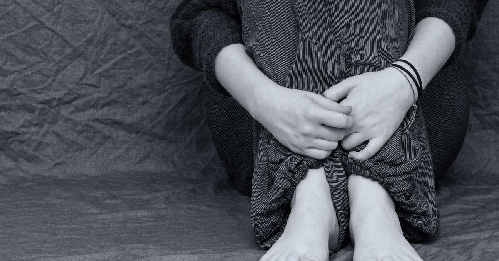

Los suicidios en adolescentes crecieron un 32% entre 2019 y 2021
"La tendencia creciente que se ve de mortalidad por suicidio en España desde 2018 parece ser también la tendencia en adolescentes", señala un informe de la Universidad Complutense de Madrid

El suicidio es la primera causa de muerte en jóvenes y adolescentes entre 12 y 29 años en España y su número va en aumento. Así se desprende del Informe sobre la Evolución del suicidio en España en población infantojuvenil (2000-2021) dirigido por Alejandro de la Torre, investigador principal del Grupo de Investigación en Epidemiología Psiquiátrica y Salud Mental de la Universidad Complutense de Madrid e investigadores del Cibersam que acaba de ver la luz. Según el trabajo, elaborado con datos del Instituto Nacional de Estadística (INE), entre 2019 y 2021 se produjo un aumento del 32,35% en el número de suicidios en adolescentes (de 12 a 17 años), pasando de 34 a 45 fallecidos por esta causa. El Covid-19, no obstante, no es el principal responsable de este aumento, según señala el informe. Desde 2018, en España se registra una tendencia creciente en la tasa de mortalidad por suicidio en todos los grupos de edad. "La pandemia de Covid-19 ha supuesto, en muchos sentidos, un cambio importante a nivel de salud mental en España. El número de casos de suicidio en población general se vio incrementado, aunque en la población de jóvenes y adolescentes este impacto no ha sido tan significativo ni se observan cambios en las comparaciones por sexo, nacionalidad y lugar de residencia", señala el texto.